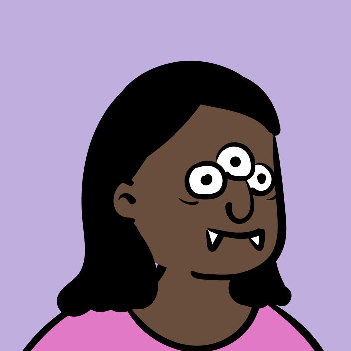

未登录
保存
取消
修改密码
退出登录
保存新密码
去登录 →
换我的头像
用在陪练聊天、侧边栏这些地方，换设备自动同步
✕
我
陪练
完成
备考目标
学习偏好
反馈关于
下次考试日期
目标总分
四科目标
口语自评
流利度
发音
每日目标小时
深色模式
日间
夜间
跟随系统
主题外观
青墨学术
学术冷色
纸感暖灰
正文字号
小
标准
大
写反馈
写反馈
更新日志
更新日志
帮助
常见问题
版本号